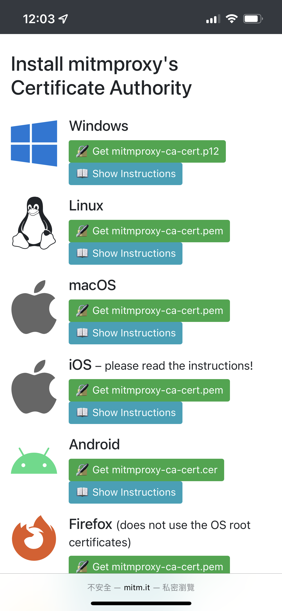
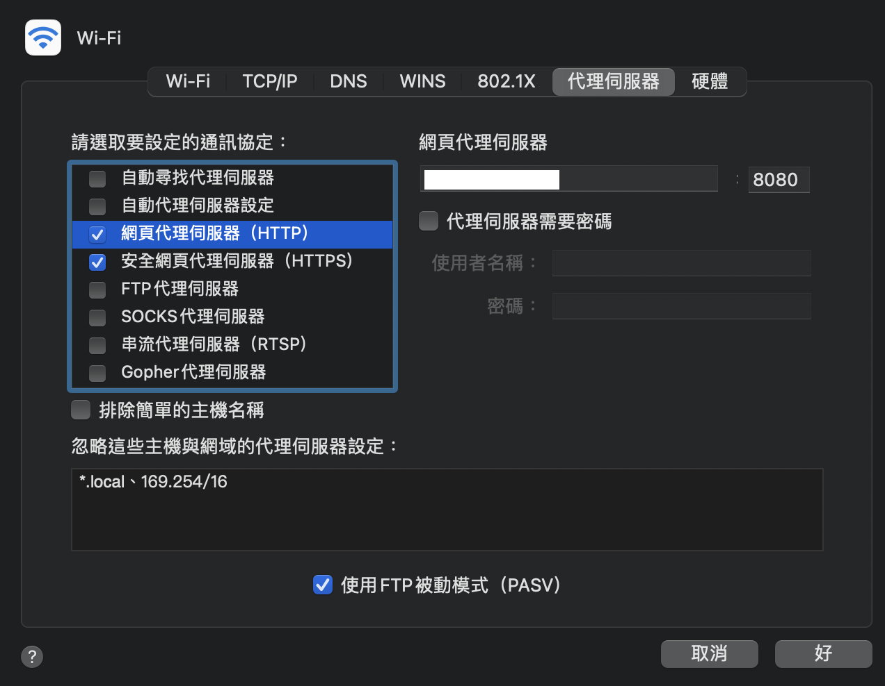
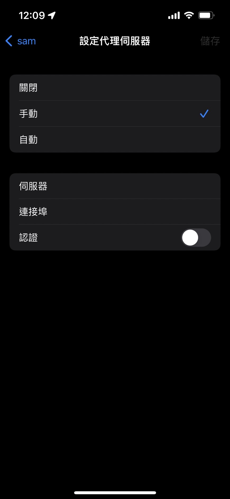

Background
MitmProxy 為一種好用的爬蟲工具，好比是偽裝的中間代理人 Proxy，負責轉遞兩台機器間的封包，在這過程中封包的內容有機會被竊聽甚至竄改，幫你抓到目前連線的所有封包。
🌟 Man in the Middle attack 中間人攻擊
這種攻擊行為中，駭客能監視您的瀏覽活動。
攻擊者能在客戶端與網站之間分別建立獨立的網路，並交換兩端所接收到的資訊，通訊的兩端認為雙方直接對話
Install
Install Package
- Mac:
brew install mitmproxy - Windows:
download the installer from [mitmproxy.org](https://mitmproxy.org/) - Pip:
pip install mitmproxy
Download certificate
對於 HTTPS 請求，為了能正常抓到請求，需要先安裝證書，若沒安裝證書，無法看到 HTTPS 的網址。
- 先在終端機打開 mitmproxy，指令：
mitmproxy - Open http://mitm.it/
- 會看到以下畫面，下載需要認證的裝置 
設定代理地址
瀏覽器、終端等的代理地址和端口同一區域網中 mitmproxy 所在電腦的 IP 地址。
- Mac > 系統偏好設定 > 網路 > 進階 > 代理伺服器 > 網頁代理伺服器(HTTP) > 在網頁代理伺服器輸入 IP 和 Port。安全網頁代理伺服器(HTTPS)也一同設定，如下圖。 
- Iphone > 設定 > Wi-Fi > 點擊你要使用 wifi 旁的藍色圖示 > 設定代理伺服器 > 手動 > 在伺服器輸入 IP > 在連接埠輸入 Port，如下圖。 
Usage
mitmproxy>> 啟動 (此指令不支援 Windows)mitmproxy -p 8888>> -p 指定 protmitmproxy -s main.py>> -s 運行你的 py 檔，所有指定的 requets 或 respones 都會經過該 py 檔mitmweb>> 可視化介面mitmdump>> 為 mitmproxy 的命令行模式